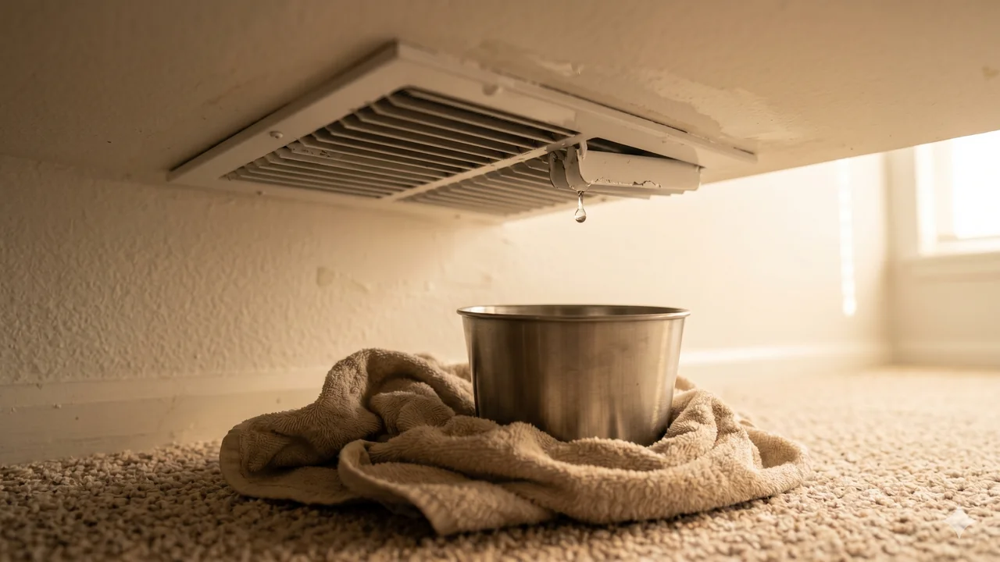

Advertising Disclosure: This site may receive compensation for service connections made through this page. Content is editorially independent.
If your ceiling vent is dripping water, the problem is almost always something upstream that has overflowed — a clogged condensate drain, a frozen coil that thawed, or duct insulation that has failed in a humid attic. Do three things in this order: (1) set the thermostat to OFF to stop the system from producing more condensation, (2) put buckets and towels under every active drip to contain the damage, (3) call a qualified HVAC technician same-day. Every hour of continued drip is ceiling drywall, flooring, and possibly drywall ceiling collapse. Do not open the air handler, do not climb into the attic to inspect, and do not try to kill the power by going to your service panel to flip the breaker — just the thermostat off is enough. If you see a visible ceiling bulge above the drip, keep everyone out of that area; a pooled ceiling can collapse suddenly.
Water dripping from an AC vent is a water-damage-in-progress event. Ceiling drywall soaks, flooring warps, and mold starts growing after 24 to 48 hours. Treat this as a same-day HVAC call, not a "book next week" problem. Set the thermostat to OFF, catch the water with buckets, and call a qualified HVAC technician. Do not kill the power by going to your service panel to flip the breaker — just the thermostat off is enough and avoids panel operation entirely. Do not climb into the attic to inspect — wet attics are slip hazards, the air handler contains live 240V wiring, and you cannot safely diagnose the root cause from there. Do not touch any electrical fixture (ceiling light, fan) in the dripping area. If you see water pooling in the ceiling above the drip (drywall bulging or sagging), keep everyone out — a pooled ceiling can collapse. Refrigerant work, if the evaporator coil is implicated, is federally regulated under EPA Section 608 and certification is legally required.
Where the Water Is Actually Coming From
Air conditioning cools indoor air by running it across a cold evaporator coil inside the air handler. Humidity in the air condenses on the coil — that is a feature, not a bug, and it is how your AC also dehumidifies the house. Normally, that condensation drips into a drain pan directly under the coil and flows out through a small white PVC drain line that exits the house through an exterior wall or drains to a floor drain or condensate pump.
A typical summer day in a humid climate produces 5 to 20 gallons of condensate. When the drain path works, you never see a drop. When something blocks that path or diverts the water, it has to go somewhere — and the path of least resistance is usually the duct system that carries cooled air to your vents. Water reaching a vent is always a sign the normal drain path has failed upstream.
The 5 Causes of Water from a Ceiling Vent
1. Clogged Condensate Drain Line (Most Common)
The PVC drain line runs from the air handler to an exterior wall or a floor drain. Over time, algae, mold, and sludge build up inside the line. When the line fully clogs, water backs up into the drain pan, overflows the pan, and falls onto the ductwork or sheet metal below — eventually traveling to the nearest supply vent and dripping out. Most modern systems have a float switch that shuts the AC off when the drain pan fills, but the float switch does not stop water that has already overflowed. A technician clears the drain (vacuum at the outdoor end, vinegar flush from the cleanout), resets the float switch, and confirms the pan is draining freely. This pattern dominates calls in San Antonio and Tallahassee during peak humid summer weeks. For the related water-everywhere symptom, see our full guide on how to stop HVAC water leaks before they ruin drywall and flooring.
2. Frozen Evaporator Coil That Thawed
When the evaporator coil ices over (most commonly from a clogged air filter or low refrigerant), the ice eventually thaws either because the system shut down or because a technician turned it off. A coil holding several pounds of ice can drop a gallon or more of meltwater all at once — far more than the drain pan is sized to handle. The overflow follows the same path to the vents. This pattern often overlaps with cause 1: a clogged drain that pushes the coil into freezing in the first place. For the full freeze-thaw diagnosis, see our guide on AC freezing up in summer.
3. Missing or Damaged Duct Insulation (Attic Systems)
If your air handler lives in an attic or a crawl space with humid, uncooled ambient air, the cold supply ducts are wrapped in foam or fiberglass insulation to prevent humid attic air from condensing on the cold metal surface. When that insulation cracks, compresses, or falls away, moisture condenses directly on the outside of the duct — drips off, soaks the ceiling drywall below, and eventually emerges at the nearest vent. This is a very common pattern in older homes in the Southeast and the Gulf Coast. The fix is duct insulation repair or replacement, a technician task.
4. Cracked or Disconnected Drain Pan
The primary drain pan sits directly under the evaporator coil; a secondary (emergency) pan sits under the air handler in attic installations. Pans crack with age (plastic) or rust through (galvanized metal). A cracked primary pan dumps condensate through its floor, straight onto the cabinet below. A disconnected drain-pan-to-line fitting does the same. Both are technician repairs; the pan itself is not expensive but access through the cabinet requires opening access panels near live electrical.
5. Disconnected Duct Joint Letting Humid Attic Air Into the Supply Flow
Supply ducts joined at a plenum or junction can come apart over years — from thermal cycling, animals, or rough installation. A loose joint lets humid, warm attic air leak INTO the supply duct where it meets the cold conditioned air. That mixing condenses moisture on the inside of the duct, which then runs out the nearest vent. This is a harder problem to diagnose because the drain pan looks fine; a technician with a smoke pencil and an understanding of your duct layout is needed.
Get connected with a technician in your ZIP code.
Call Now — (844) 582-1795Disclosure: We are a referral service and may receive compensation for qualified calls. Calls may be routed to an independent provider network and may be recorded. Pricing and availability vary by provider and location.
What to Ask the Dispatcher (and Red Flags to Watch For)
When you call, ask the dispatcher to confirm: (1) the diagnostic service-call fee in writing before dispatch (typical range $65-$150 per our cost guide), (2) the technician carries current state credentialing and insurance, and (3) the quote will itemize parts and labor before any work proceeds. Red flag: any dispatcher who pushes "full air handler replacement" on a drain-line symptom without first inspecting the drain line itself — a competent diagnostic checks the drain line first ($75-$250 to clear) before recommending a larger repair. If the first quote feels disproportionate to the symptom, get a second opinion before authorizing.
What You Can Safely Do Right Now
The safe homeowner actions on this symptom are narrow but time-sensitive. Do them in order.
- Set the thermostat to OFF. This stops the system from producing more condensation and the drip rate drops within minutes. No electrical work involved, no approach to the air handler. This is the single most valuable action you can take to limit water damage.
- Put buckets and towels under every dripping vent. Walk the house. Any vent that is actively dripping or has visible water staining gets a bucket or large bowl underneath, with old towels around the perimeter to catch splashes. A plastic tarp or drop cloth on the floor helps if you have one. Move electronics, paper, art, and valuables out of the drip path.
- Check the ceiling for bulging above the drip. If you see the drywall ceiling bulging or sagging, water is pooling on top of it. A pooled ceiling can collapse suddenly under the weight. Keep everyone out of that area. If you are comfortable doing so from a safe position, a small hole drilled through the drywall bulge releases the pooled water in a controlled way and relieves the collapse risk. If you are not comfortable, skip this and just keep the area clear.
- Call a qualified HVAC technician same-day. Every hour of drip compounds ceiling damage and accelerates mold risk. Describe exactly what you see: which vent, how fast the drip, whether there is a ceiling bulge, whether the system has been running in heavy use recently (heat wave, guests, etc.). If you cannot get a same-day call, your second call is to a water-damage restoration company to prevent the mold cascade.
Do NOT do any of the following — every one either wastes time or creates a new hazard:
- Flip the AC breaker at your service panel. Thermostat off is enough; the breaker does not need operating.
- Climb into the attic or crawlspace to inspect. A wet attic is a slip hazard, the air handler sits alongside live 240V wiring, and the diagnosis requires tools you do not have.
- Open the air handler access panel. Even with the breaker off, capacitors inside the cabinet store a lethal charge for minutes.
- Touch any ceiling light, ceiling fan, or electrical fixture in the dripping area. Water plus electricity is a shock and fire risk — leave those fixtures off until the technician has cleared them.
- Try to "pour vinegar" or "snake the drain" yourself. Those are technician procedures that require access to the drain cleanout, which is usually inside the air handler cabinet.
- Restart the AC after the drip stops, thinking the problem is gone. The underlying cause is still there; the water will come back within an hour or two.
When to Stop and Call a Professional (and How Urgently)
Short answer: call now. The condition is worsening on the clock. Specific patterns that make it more urgent:
- Water is dripping from more than one vent or across multiple rooms. The drain overflow or duct issue is extensive; ceiling damage is compounding fast.
- You see a visible ceiling bulge anywhere the water is pooling. A collapse is possible; keep people and pets out of the area.
- The drip reaches a ceiling light fixture, ceiling fan, or smoke detector. Shut off the breaker for that circuit (a fixture-level breaker, not the AC breaker) if you can identify it confidently; otherwise call a qualified electrician alongside the HVAC technician.
- The drip started after a heat wave. The coil almost certainly iced over from the system running flat-out and the drain could not handle the thaw. Mention this on the call — the technician will come prepared.
- The drip smells musty or contains visible gray/black material. Mold has likely been developing for some time. Keep clear of the affected area and surface this during the technician's diagnosis.
- The system is in an attic. Attic units drip through ceilings directly into living spaces; damage accumulates faster than with basement or closet systems.
For the full map of every AC failure mode and how they connect, see our complete AC troubleshooting guide. If the underlying cause turns out to be a frozen coil, our guide on AC freezing up in summer covers the full thaw procedure. If the thermostat also went blank when the float switch tripped, read thermostat blank, AC won't turn on. For the broader water-leaks-indoors picture, see how to stop HVAC water leaks before they ruin drywall and flooring.
What a Technician Will Actually Check
A thorough diagnosis walks the whole condensate path and checks the duct system:
- Drain line flow test. The technician pours water into the cleanout and confirms it flows freely out the exterior end. Slow flow or no flow indicates a clog; technician-grade drain clearing (wet-vac at the outdoor end, nitrogen blowout, or enzyme treatment) clears it.
- Drain pan inspection. Opening the air handler access panel (a technician-only step because of adjacent live electrical components), the technician inspects both the primary pan for cracks, and the secondary (emergency) pan on attic installations.
- Float switch operation. Confirming the switch interrupts the 24V signal correctly when the pan fills — and resetting it after the drain is cleared.
- Evaporator coil inspection. Looking for ice accumulation or recent ice damage, biofilm buildup that could have restricted drain flow, and fin condition.
- Duct insulation inspection (attic or crawl space systems). Walking the duct runs to identify cracked or missing insulation that would let humid air condense on a cold duct surface. This is the diagnosis for the harder "where is the water coming from if the drain is fine?" cases.
- Refrigerant charge check. Low refrigerant is a common upstream cause of the coil freeze that led to the overflow in the first place. Refrigerant-side work is federally regulated — see the safety warning above.
What Repairs Cost in 2026
Pricing on this site is anchored to our complete 2026 HVAC Cost Guide, which is the single source of truth for every cost figure — no drift between articles.
- Diagnostic / service call: $65–$150 (often credited toward the repair if approved)
- Drain line clearing + float switch reset: $75–$250
- Drain pan replacement: $150–$500
- Duct insulation repair: $150–$500
- Evaporator coil replacement (if compromised): $600–$2,000
- Emergency / after-hours surcharge: $100–$300 added
Estimated ranges based on publicly available industry data and in sync with our complete cost guide. Actual costs vary by region, provider, and system.
The ceiling-repair side is usually larger: drywall patch and paint runs $200 to $1,500 depending on the area and ceiling texture, flooring replacement if water reached it, and mold remediation ($500 to $6,000) if the water sat for more than 48 hours before cleanup. That is why speed matters — a same-day HVAC call keeps the water-damage cost contained.
Climate Matters: Where This Shows Up Most
Hot-humid climates (San Antonio, Tallahassee, the Gulf Coast): The dominant pattern is drain-line clogs from algae and biofilm growth during high-condensate summer weeks, plus duct insulation failures in older attic installations. An annual professional drain flush (part of a spring tune-up) prevents most of these calls. In coastal Florida, expect the frequency to climb in August and September when dew points stay above 75°F for weeks.
Hot-dry climates (El Paso, Phoenix, Las Vegas): Low condensate production means drain-line clogs are rarer, but they still happen after dust accumulation seasons. The more common pattern here is frozen-coil thaws in low-refrigerant systems — the sudden release of pounds of ice water overwhelms a drain pan sized for normal condensate loads.
Mixed-humid climates (Charleston, St. Louis, Cincinnati): The hybrid pattern — shoulder-season duct condensation (cool ducts, humid spring days), peak-summer drain clogs, and occasional frozen-coil events all show up. Browse local service providers in Texas, Florida, or explore all service areas.
Trusted Industry Sources
The guidance in this article is consistent with published recommendations from:
- U.S. Department of Energy — Central Air Conditioning
- EPA Section 608 — Refrigerant Handling Regulations
- EPA — Mold Cleanup in Your Home
- ENERGY STAR Heating & Cooling
Don't wait — get a technician dispatched to your area.
Call Now — (844) 582-1795Disclosure: We are a referral service and may receive compensation for qualified calls. Calls may be routed to an independent provider network and may be recorded. Pricing and availability vary by provider and location.
Frequently Asked Questions
The water is condensation that your AC produces as it cools humid indoor air. Normally it flows into a drain pan under the evaporator coil and out through a PVC drain line. When you see water at a supply vent, something upstream has overflowed or condensed in the wrong place. Five common causes: a clogged condensate drain line (most common), a frozen evaporator coil that thawed and overwhelmed the drain, missing or damaged insulation on a supply duct in a humid attic (cold duct + humid air = condensation on the outside of the duct), a disconnected or cracked drain pan, or a disconnected duct joint letting humid attic air into the supply airflow. All five are technician repairs.
The water itself is just condensation — it is not a contamination hazard in the short term. The danger is what it does to your home. Water soaking into ceiling drywall causes the drywall to swell, stain, and eventually sag. Water reaching electrical components (recessed lighting fixtures, wiring) creates a shock and fire hazard. Water trapped inside walls or ceilings for more than 24 to 48 hours starts growing mold, which becomes a health hazard and a much more expensive remediation. Treat this as a same-day call, not a next-week call.
Not until a technician has identified and fixed the cause. The dripping stops when the drain pan empties or when the system shuts off long enough for the coil to thaw — but the underlying problem is still there. Running the system again restarts the condensation cycle, and within a couple of hours the water reappears. Worse, running a frozen coil further damages the compressor, and running with an overflowing drain pan triggers the float switch into permanent shutdown mode on most modern systems. Leave the thermostat off and wait for diagnosis.
Three actions: thermostat off (stops new condensation production), buckets and towels under every active drip (protects the floor and furniture), and move electronics and valuables out of the drip path. Do not try to climb into the attic to inspect the HVAC system yourself — a wet attic is a slip hazard, the air handler sits next to live high-voltage wiring, and you cannot safely diagnose the issue from up there anyway. If you see a ceiling bulge where water is pooling on top of the drywall, keep everyone out of that area — a pooled ceiling can collapse suddenly under weight.
Generally yes for sudden, accidental discharge (a cracked pan or a frozen-coil thaw), and generally no for gradual leaks that developed over weeks or months because of lack of maintenance. Most homeowner's policies cover the water-damage cleanup and drywall repair but specifically exclude the cost of repairing the HVAC system itself. Document the damage with photos before cleaning up, keep all technician invoices, and file a claim promptly. Policy language varies by carrier — confirm with your insurance agent.
The HVAC repair itself is usually modest. Expect a diagnostic fee of $65 to $150, drain line clearing with float switch reset at $75 to $250, drain pan replacement at $150 to $500, duct insulation repair at $150 to $500, and evaporator coil replacement (if the coil itself is compromised) at $600 to $2,000. The larger costs are usually on the water-damage side: drywall repair ($200 to $1,500 depending on area), insulation replacement, flooring if water reached it, and mold remediation if the water sat more than 48 hours. That is why speed matters — same-day HVAC repair keeps the damage contained.
Local HVAC Service Areas
Cool Call Pro connects homeowners with independent HVAC technicians nationwide. Find a pro in San Antonio (TX), Tallahassee (FL), El Paso (TX), or Charleston (WV), or browse by state: Texas, Florida, or all locations.